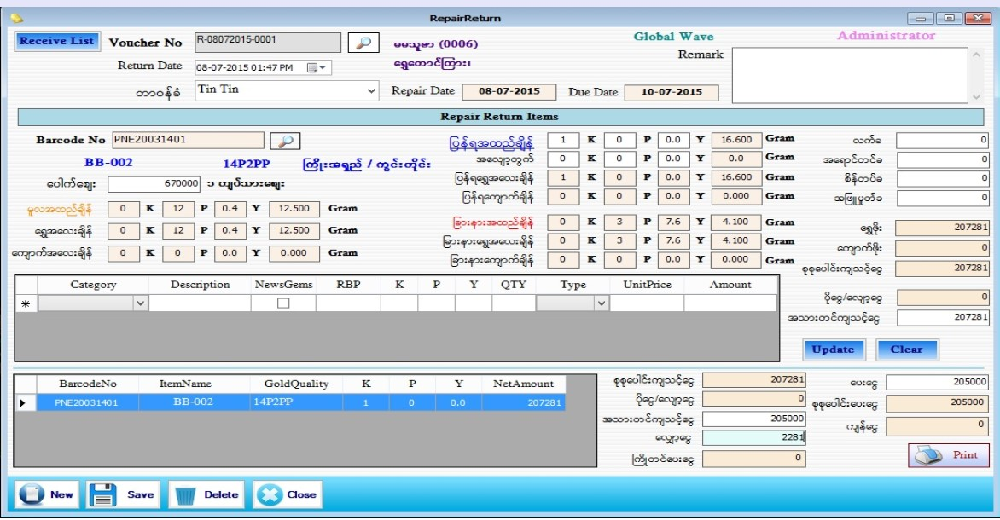

Repair Return Setup

- Transaction အောက်ရှိ Repair Stock Return ကို နှိပ်၍ ဖွင့်ပါ ။
- Repair Return Stock Form သည် ပြင်ထည်ပြန်ရွေးသော Form ဖြစ်ပါသည်။
- Received Lists Button ကိုနှိပ်၍ ပြန်ရွေးမည့် ပြင်ထည် Voucher ကို ရွေးပါ။ Voucher No. တွင် ပြင်ထည်လက်ခံသည့် Voucher No. ကို တွေ့ရမည်ဖြစ်ပြီး Return Date တွင် လက်ရှိ အချိန်နှင့် နေ့စွဲ ကို ဖော်ပြပါမည်။
- တာဝန်ခံ ဝန်ထမ်းကို ရွေးချယ်ပါ။ Repair Voucher ကို ရွေးချယ်လိုက်သည်နှင့် ဝယ်သူ၏ အမည်၊ ဝယ်သူ၏ Code နံပါတ်နှင့် ဝယ်သူ၏ လိပ်စာမှာ Auto ပေါ်နေပါလိမ့်မည်။ Repair Date နှင့် Due Date တွင် ပြင်ထည်လက်ခံစဉ်က နေ့စွဲနှင့် Due Date ကို တွေ့ရမည်။
- Barcode No ၏ ဘေးတွင်ရှိသော Search Button ကို နှိပ်ပြီး သက်ဆိုင်သော Data ကို ရွေးချယ်ပါ။ ပေါက်စျေးနှင့် အတူ ပြင်ထည်လက်ခံစဉ်က သတ်မှတ်ခဲ့သော အထည်ချိန်နှင့် Data များကျလာပါလိမ့်မည်။ ပြန်ရအထည်ချိန်တွင် ယခု ရလာသည့် ပစ္စည်း ကို ချိန်ပါ။ အလျော့တွက်ကို ထည့်ပါ။ ကျောက်ပါသော အထည်ဖြစ်ပါက အောက်ရှိကျောက် Grid တွင် အထည်တွင်ပါသော ကျောက်များကို ဖြည့်စွက်ပါ။ အသစ်ထပ်ထည့်ပေးသောကျောက်ဖြစ်ပါက Grid ထဲရှိ NewGems အကွက်တွင် အမှန်ခြစ်ခြစ် ပေးပါ။ ဝယ်သူတွင် မူလအထည်က ပါသောကျောက်ဖြစ်ပါက NewGems အကွက်တွင် အမှန်ခြစ်ခြစ် ပေးစရာမလိုပါ။
- ပြန်ရရွှေအလေးချိန် နှင့် ဆိုင်မှ အသစ်ထပ်ထည့်သော ကျောက်ပါလာပါက ပြန်ရကျောက်ချိန်တွင် ကျောက်အသစ်၏ အလေးချိန်ကို ပြပေးနေလိမ့်မည်။
- ခြားနားအထည်ချိန်တွင် ( ပြန်ရအထည်ချိန် - မူလအထည်ချိန်)၊ ခြားနားရွှေချိန်တွင် ( ပြန်ရရွှေချိန် - မူလရွှေချိန်)၊ ခြားနာကျောက်ချိန်တွင် ( ပြန်ရကျောက်ချိန် - မူလကျောက်ချိန် ) တို့ကို ပြပေးနေလိမ့်မည်။ လက်ခ၊ အရောင်တင်ခ၊ စိန်တပ်ခ၊ အဖြူမှုတ်ခ တို့ ရှိလျှင် ဖြည့်စွက်ပါ။ ရွှေဖိုးတွင် ( ခြားနားရွှေချိန်+အလျော့တွက်) x ပေါက်စျေး အတိုင်းတွက် ပြီး ပြနေပါလိမ့်မည်။
- Add button နှိပ်လိုက်ပါက အောက်ဘက်ရှိ Grid ထဲသို့ရောက်သွားပါမည်။ Data များဖြည့်ပြီးပါက Save Button ကိုနှိပ်၍ သိမ်းဆည်းနိုင်ပါသည်။
- သိမ်းဆည်းပြီးသား Data များအား ပြန်လည်ကြည့်ခြင်း၊ ပြင်ဆင်ခြင်းများပြုလုပ်ချင်ပါက Voucher No. ၏ ဘေးတွင် ရှိသော မှန်ဘီလူး button ကိုနှိပ်ပြီးပြန်လည်ကြည့်ရှုပြင်ဆင်ချင်သော Voucher အား ရွေးချယ် ပြီးပြင်နိုင် ပါသည်။
- Repair ReturnVoucher ထုတ်လိုလျှင် Print Button ကိုနှိပ်၍ Voucher ထုတ်နိုင်ပါသည်။
- သိမ်းဆည်းပြီးသား ထည့်ပြီးသား Data များကို ဖျက်လိုလျှင် Voucher No. ၏ ဘေးတွင် ရှိသော မှန်ဘီလူး button အား နှိပ်ပြီးရှာပါ။ ထို့နောက် မိမိဖျက်လိုသော Data ကို Delete Button ကိုနှိပ်၍ ဖျက်နိုင်ပါသည်။
- Repair Return Stock အသစ်ထည့်လိုပါက New Button ကိုနှိပ်ပြီး အသစ်ထည့်နိုင်ပါသည်။
- Repair Return Stock Form အား အသုံးပြုပြီးပါက Close Button ကိုနှိပ်၍ ပိတ်နိုင်ပါသည်။